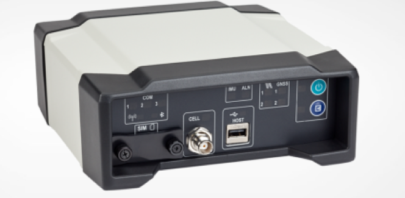

Installation Guide of NovAtel Propak6 and NovAtel IMU-IGM-A1
NovAtel ProPak6 is a standalone GNSS receiver. It works with a separate NovAtel-supported IMU (in this case, the NovAtel IMU-IGM-A1)to provide localization functionality.
The IMU-IGM-A1 is an IMU that pairs with a SPAN-enabled GNSS receiver such as the SPAN ProPak6.

The GPS Receiver/Antenna used with the GPS-IMU component is the NovAtel GPS-703-GGG-HV.

Installing the GPS Receiver and Antenna
The installation instructions describe the procedure to mount, connect, and take the lever arm measurements for the GPS NovAtel SPAN® ProPak6™ and the NovAtel IMU-IGM-A1.
Components for the Installation
The components that are required for the installation include:
NovAtel GPS SPAN ProPak6
NovAtel IMU-IGM-A1
NovAtel GPS-703-GGG-HV Antenna
NovAtel GPS-C006 Cable (to connect antenna to GPS)
NovAtel 01019014 Main Cable (to connect GPS to a serial port on the IPC)
Data Transport Unit (DTU) – similar to a 4G router
Magnetic adapters (for antenna and DTU)
DB9 straight through cable
Mounting
You can place the two devices, the ProPak6 and the IMU in most places in the vehicle, but it is suggested that you follow these recommendations:
Place and secure the ProPak6 and the IMU side-by-side inside the trunk with the Y-axis pointing forward.
Mount the NovAtel GPS-703-GGG-HV antenna on top of the vehicle or on top of the trunk lid as shown:

Use a magnetic adapter to tightly attach the antenna to the trunk lid.
Install the antenna cable in the trunk by opening the trunk and placing the cable in the space between the trunk lid and the body of the car.
Wiring
Follow these steps to connect the ProPak6 GNSS Receiver and the IMU to the Apollo system:
Use the split cable that comes with IMU-IGM-A1 to connect the IMU Main port and theProPak6 COM3/IMU port.
Use a USB-A-to-MicroUSB cable to connect the USB port of the IPC and the MicroUSB port of the ProPak6.
Connect the other end of the IMU-IGM-A1 split cable to the vehicle power.
Connect the GNSS antenna to Propak6.
Connect the Propak6 power cable.

Taking the Lever Arm Measurement
Follow these steps:
Before taking the measurement, turn on the IPC.
When the IMU and the GPS Antenna are in position, the distance from the IMU to the GPS Antenna must be measured. The center of the IMU and the center of the antenna are labeled on the exterior of the devices.
The distance should be measured as: X offset, Y offset, and Z offset. The axis should be determined by the IMU. The error of offset must be within one centimeter to achieve high accuracy in positioning and localization.
Configuring the GPS and IMU
Configure the GPS and IMU as shown below. This process can be done either by keying in the commands, or by loading batch configuraion file in NovAtel Connect.
WIFICONFIG STATE OFF
UNLOGALL THISPORT
CONNECTIMU COM3 IMU_ADIS16488
INSCOMMAND ENABLE
SETIMUORIENTATION 5
ALIGNMENTMODE AUTOMATIC
VEHICLEBODYROTATION 0 0 0
COM COM1 9600 N 8 1 N OFF OFF
COM COM2 9600 N 8 1 N OFF OFF
INTERFACEMODE COM1 NOVATEL NOVATEL ON
PPSCONTROL ENABLE POSITIVE 1.0 10000
MARKCONTROL MARK1 ENABLE POSITIVE
EVENTINCONTROL MARK1 ENABLE POSITIVE 0 2
interfacemode usb2 rtcmv3 none off
rtksource auto any
psrdiffsource auto any
SETIMUTOANTOFFSET 0.00 1.10866 1.14165 0.05 0.05 0.08
SETINSOFFSET 0 0 0
EVENTOUTCONTROL MARK2 ENABLE POSITIVE 999999990 10
EVENTOUTCONTROL MARK1 ENABLE POSITIVE 500000000 500000000
LOG COM2 GPRMC ONTIME 1.0 0.25
LOG USB1 GPGGA ONTIME 1.0
log USB1 bestgnssposb ontime 1
log USB1 bestgnssvelb ontime 1
log USB1 bestposb ontime 1
log USB1 INSPVAXB ontime 1
log USB1 INSPVASB ontime 0.01
log USB1 CORRIMUDATASB ontime 0.01
log USB1 RAWIMUSXB onnew 0 0
log USB1 mark1pvab onnew
log USB1 rangeb ontime 1
log USB1 bdsephemerisb
log USB1 gpsephemb
log USB1 gloephemerisb
log USB1 bdsephemerisb ontime 15
log USB1 gpsephemb ontime 15
log USB1 gloephemerisb ontime 15
log USB1 imutoantoffsetsb once
log USB1 vehiclebodyrotationb onchanged
SAVECONFIG
 WARNING: Modify the SETIMUTOANTOFFSET line based on the actual measurement (of the antenna and the IMU offset).
WARNING: Modify the SETIMUTOANTOFFSET line based on the actual measurement (of the antenna and the IMU offset).
For example:
SETIMUTOANTOFFSET -0.05 0.5 0.8 0.05 0.05 0.08
The first 3 numbers indicate the result of the lever arm distance measurement. The last 3 numbers are the uncertainty of the measurement.
References
For more information about the NovAtel SPAN ProPak6 and the IMU-IGM-A1, see:
Disclaimer
This device is Apollo Platform Supported